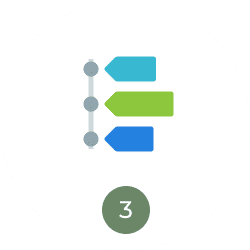
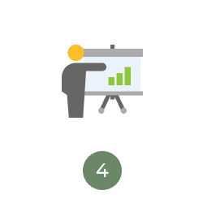
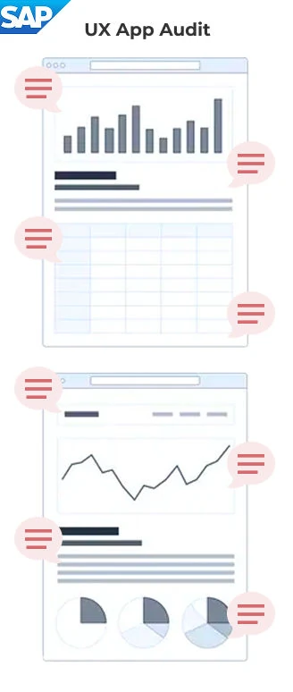
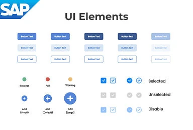
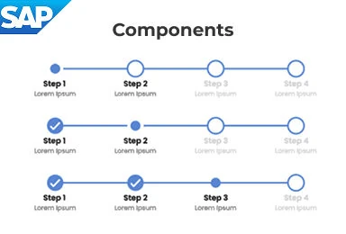
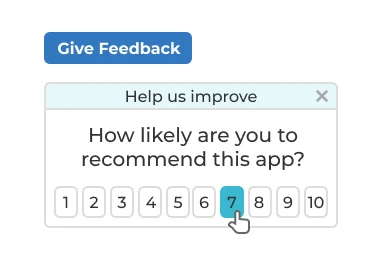
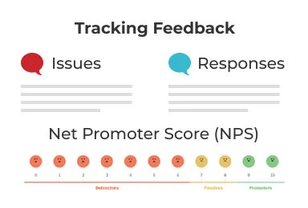
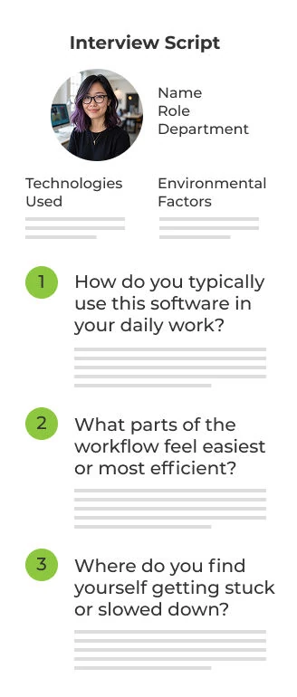

Making 40+ enterprise apps feel like one product

Overview
The problem
The company ran more than 40 SAP apps, and each one had been built by a different team at a different time. Someone in the field might open four of them before lunch and have to relearn the layout every time. Design got pulled in at the end to clean things up, if it got pulled in at all. And no one could say whether any of it was working, because no one was measuring it.
The solution
I built one design system and one accessibility standard for all 40+ apps, then made them easy to use with a shared component library and design checkpoints written into the release process. The apps started to look and work alike. People stopped relearning the same screens. And design quality finally had numbers behind it, so the business could see what it was getting.
Who I worked with
Partners from strategy through delivery
What I worked on
A portfolio of 40+ SAP Fiori business apps
My approach
Building an enterprise UX practice that scales
Four moves that turned scattered, one-off design work into a system, and made 40+ apps feel like one product.

Establish the foundation
Build one design system that all 40+ apps share.
Create feedback loops
Trade guesswork for feedback from the people using the apps.

Make quality routine
Check design and accessibility at every step, not just at the end.

Get teams to own it
Train teams, show what’s working, make UX everyone’s job.
Establish the foundation
Before any of the bigger work, the apps needed to look and behave like they came from the same company. We reviewed all of them, then built a Fiori style guide with a reusable component library and accessibility rules everyone worked from. Once a button looked like a button everywhere, people could stop thinking about the interface and get on with the job. Designers and developers stopped guessing, too.
User experience audits

- Visual hierarchy
- Form clarity
- Feedback & alerts
- Accessibility & contrast
- Error recovery
- Readability
- Button alignment
Fiori style guide

- Colors & typography
- Core UI elements
- Accessibility rules
Fiori pattern library

- Progress stepper
- Filter bar
- Dialog / Message box
Create feedback loops
Most enterprise teams design without ever hearing from the people on the other end of the screen. We added feedback right inside the apps, sat with people during their workday, and tracked where they got stuck, so the teams building the apps could feel what their users were feeling. Assumptions gave way to evidence, and the conversation shifted from “what should we ship next” to “what’s actually getting in people’s way.”
In-app user feedback

- Capture feedback at the moment of use
- Turn what people tell us into quick fixes
Closing the loop

- Keep product teams and users talking
- Track feedback over time
“Day in the life” interviews

- Workflow optimization
- Pain points
- Workarounds
- What slows people down
- How information moves
- Collaboration gaps
- User expectations
Make quality routine
Design quality is decided between the moment a request comes in and the day the app ships. We added UX and accessibility checks at every step in between, so quality wasn’t something bolted on at the end. The standards stopped being a document and started showing up in every release.
Cross-functional workflow for app feedback

Get teams to own it
Tools and standards don’t change a culture on their own. We ran training, told the stories of what was working, and made it normal to talk about user experience the same way teams already talked about uptime or revenue. UX went from “someone else’s job” to a shared craft.
Design thinking workshops

- Usability
- Accessibility
- Visual design
- Information architecture
- Performance
- Adoption
- Business alignment
Success stories

- Build awareness
- Inspire teams
- Strengthen credibility
Product health scorecard

- Let teams run their own UX checks
- Identify areas to improve
The impact
True design isn't just about pixels. It's about the system that produces them. And it kept working after I left.